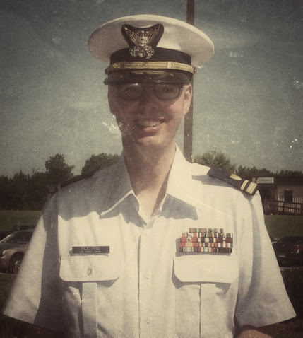

Robert Pickering
Professional Background
July 2011 to Present
Lieutenant , U.S. Coast Guard C4IT Service Center Norfolk, VA
- Project Officer for the Asset Visibility Inventory Consolidation System
- Contracting Officers Representative for project to re-baseline operating costs for the Coast Guard`s Operations System Center
- Coordinated the removal and disposition of all IT and Electronic systems from three decommissioned High Endurance Cutters
September 2001 to July 2011
Electronics Technician, 1st thru 3rd Class, Multiple Assignments
U.S. Coast Guard
- Provided depot level support for RADAR systems installed throughout the Coast Guard
Lead Petty Officer supervised electronics repair shop of ten technicians providing primary casualty response and maintenance for shore side electronics in Hawaii
Hobbies and Interests
- I hold an active amateur radio opperator license: WH7HX.
- I've been a proponent of Open Source Software and have been a user of Linux or *BSD since 2005 (although I developed an interest in the subject back in 1998.)
-
I am currentely working on building
a small web server
on a Beagle Bone Black single board computer.
Hw1 assignment description